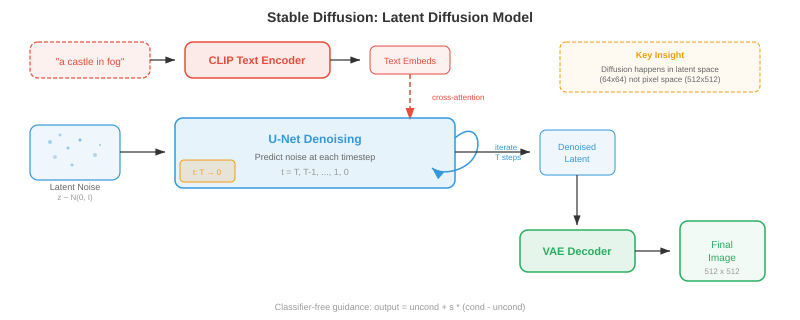
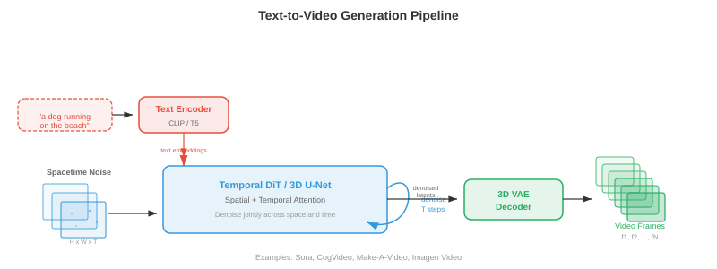
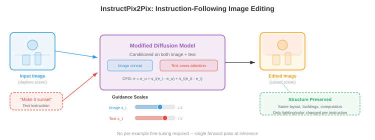

跨模态生成¶
一句话总结：跨模态生成是根据一种模态的输入产生另一种模态的输出，覆盖文生图、图生文、文生视频、文生音频，是多媒体 AI 的创作引擎。
跨模态生成根据一个模态的输入产出另一个模态的输出：文本到图像、图像到文本、文本到音频，以及更多。 本文覆盖 DALL-E、Stable Diffusion、无分类器引导、ControlNet、图像描述、文本生视频 (Sora)、文本生音频.
-
本章前 01-03 三节里，我们学了如何表示、对齐、分词化不同的模态。 现在轮到创作动作了：从一个模态生成另一个模态。 跨模态生成是文生图工具、视频合成系统、音乐创作模型、图像描述背后的引擎。 把它想成教一台机器成为多媒体艺术家 —— 你用文字描述想要什么，它就画出来、动画出来、或谱写出来。
-
核心思想是条件生成 (conditional generation)：给定来自模态 \(A\) 的输入 (例如文本)，产出模态 \(B\) 的输出 (例如图像). 形式化地讲，就是学习一个模型 \(p_\theta(y \mid x)\)，其中 \(x\) 是条件信号，\(y\) 是生成的输出。 难点在于这个条件分布极其复杂、维度极高 —— 一张 512x512 的图像生活在 \(\mathbb{R}^{786432}\) 里，而同一段文本提示对应的合理图像有无数张。

文本到图像生成¶
- 想象你在向法庭速写画师描述一幕场景。 画师要理解你的话、回忆物体的样子、把它们在空间里布好，再画出成品。 文生图模型干的就是这件事，但它得从数据里学到所有这些本事，而不是靠美术学院上几年。
DALL-E：自回归图像生成¶
-
DALL-E (Ramesh 等，2021) 把图像生成当成序列预测问题 —— 和驱动语言模型 (第 07 章) 的范式一模一样。 关键洞见是：如果能把图像表示成离散 token (回忆一下第 03 节的 VQ-VAE)，那么生成图像不过就是一个一个地生成 token.
-
流水线分两阶段。 第一阶段，离散变分自编码器 (discrete Variational Autoencoder, dVAE) 把 256x256 图像压缩到 32x32 的离散 token 网格，词表 (codebook) 有 8192 条，相当于把图像变成了 1024 个 token 的序列。 第二阶段，训一个 Transformer 解码器，建模 256 个文本 token (BPE 编码) 和 1024 个图像 token 拼接起来的联合分布，共 1280 个 token:
-
生成时，把文本 token 喂进去，模型自回归地一个一个采样图像 token. 这套做法很漂亮，因为它完全复用了语言建模的机器 —— 注意力、因果掩码、top-k 采样 —— 来做图像合成。
-
缺点是自回归生成天然是串行的：一个一个地生成 1024 个 token 很慢，而且早期的错误会一路放大。 DALL-E 的应对办法是生成许多候选图像，再用 CLIP (第 01 节) 重排，挑出与文本提示最匹配的那张。

Stable Diffusion：带文本条件的潜在扩散¶
-
Stable Diffusion (Rombach 等，2022) 走了一条根本不同的路。 它不是一个一个地预测 token，而是从纯噪声出发，由文本提示引导，逐步把噪声去掉，变成图像。 回忆第 8 章的扩散模型 —— Stable Diffusion 在压缩后的潜空间里操作，而不是在像素空间，因此效率高出许多。
-
架构有三个组件协同工作。 变分自编码器 (Variational Autoencoder, VAE) 编码器 把图像从像素空间 (\(512 \times 512 \times 3\)) 压到潜在表示 (\(64 \times 64 \times 4\))，维度缩减了 48 倍。 文本编码器 (通常是 CLIP 或 OpenCLIP) 把文本提示转成一串嵌入向量。 U-Net 去噪器 拿到有噪的潜在、时间步、文本嵌入，预测每一步要减掉的噪声。 文本条件通过交叉注意力 (cross-attention) 层进入 U-Net:
-
其中 \(Q\) 来自有噪图像特征，\(K, V\) 来自文本嵌入。 这让模型可以在每个空间位置上关注相关的词 —— 去噪某个"红色球"该出现的区域时，模型就去关注 "red" 和 "ball" 这两个 token.
-
推理时，先在潜空间采样 \(z_T \sim \mathcal{N}(0, I)\)，用 U-Net 迭代去噪 \(T\) 步 (常见 20-50 步，配合 DDIM 调度)，再把干净的潜在 \(z_0\) 通过 VAE 解码器还原到像素空间。 整个前向过程在消费级 GPU 上几秒就能生成一张 512x512 图像。

实战中的无分类器引导¶
- 无分类器引导 (Classifier-Free Guidance, CFG) 是文生图模型能真正贴合提示的秘密调料。 回忆第 8 章：CFG 让模型既做有条件训练，又做无条件训练，采样时再把有条件信号放大:
-
其中 \(s\) 是引导尺度 (guidance scale). 把 \((\epsilon_\theta(x_t, c) - \epsilon_\theta(x_t, \varnothing))\) 这一项想成"朝着提示的方向" —— 它捕捉了有条件预测比无条件预测多出来的那部分。 乘上 \(s > 1\) 就是放大这个方向，把图像推得更贴近文本描述，但代价是多样性下降。
-
实战中，Stable Diffusion 常用 \(s = 7.5\) 作默认。 \(s = 1.0\) 时，你拿到的是原始模型输出 (多样性好但和提示不太贴). \(s = 20+\) 时，图像会过饱和、重复度高，但与文本贴得非常紧。 最优 \(s\) 看应用场景：创意探索偏爱较低的引导，精确遵循提示则需要较高的引导。
Imagen：级联扩散 + 语言理解¶
-
Imagen (Saharia 等，2022) 证明了一件事：一个强大的文本编码器比更大的图像模型更重要。 Imagen 不用 CLIP，而是用一个冻结的 T5-XXL 语言模型 (第 07 章) 作文本编码器，后者对语言语义、组合性、空间关系 ("一个红色球体上放一个蓝色立方体") 的理解丰富得多。
-
Imagen 采用级联扩散 (cascaded diffusion)：基础扩散模型生成 64x64 图像，第一个超分模型把它上采样到 256x256，第二个超分模型再到 1024x1024. 每一级都是一个独立的扩散模型，以文本为条件 (对超分级还要加上低分辨率图像). 这种级联让基础分辨率不必去建模细节，基础模型可以专心搞构图与语义，超分模型负责纹理与锐度。
-
Imagen 还引入了动态阈值 (dynamic thresholding)：每一步去噪时，预测的像素值裁到基于分位数的范围，而不是固定的 \([-1, 1]\). 这能防止高引导尺度下的过饱和伪影 —— 扩散模型的常见问题。
Parti：大规模的自回归路线¶
-
Parti (Pathways Autoregressive Text-to-Image, Yu 等，2022) 用大规模复活了自回归路线。 和 DALL-E 一样，它把图像转成离散 token (用 ViT-VQGAN)，再用 Transformer 顺序生成。 但 Parti 用了一个 200 亿参数的编码器-解码器 Transformer (基于 Pathways 架构)，证明了自回归模型在规模够大时也能追上扩散模型的质量。
-
Parti 的编码器-解码器架构是与 DALL-E 仅解码器设计的关键差别。 文本走编码器；解码器在生成图像 token 时交叉注意力到编码后的文本。 这和机器翻译 (第 07 章) 很像 —— 你在把"文本语言"翻成"图像语言".
DiT 与基于流的生成¶
-
扩散 Transformer (Diffusion Transformer, DiT) (Peebles 和 Xie, 2023) 把扩散模型里的 U-Net 主干换成了纯 Transformer. 每个有噪的潜在图块 (patch) 被当成一个 token (类比第 8 章的 ViT), Transformer 对这些 token 做自注意力，并对文本条件做交叉注意力。 DiT 证明了 Transformer 在扩散上的扩展性比 U-Net 更可预测 —— 算力翻倍，FID 分数稳稳减半。
-
流匹配 (flow matching) (来自第 8 章) 已成为扩散噪声预测范式的替代。 它不再预测要减掉的噪声 \(\epsilon\)，而是预测一个速度场 \(v_\theta(x_t, t)\)，沿直线路径把样本从噪声输送到数据。 Stable Diffusion 3 和 Flux 采用流匹配，加上多模态 DiT (MM-DiT) 架构 —— 文本 token 与图像 token 在 Transformer 块里被联合处理，采用双向注意力，两个模态互相关注，而不是让文本单向地通过交叉注意力去条件化图像特征。

文本到视频生成¶
- 文生视频就是文生图，但多了一个残酷的约束：时序一致性 (temporal coherence). 每一帧都要在内部自洽 (是一张合理图像)，相邻帧之间还要平滑衔接 —— 物体运动自然、光照连续变化、"镜头"沿物理上合理的轨迹推进。 想想画一幅风景和拍一部电影的差别。
时序上的挑战¶
- 视频比图像生成多出三个挑战。 时序一致性 要求物体跨帧保持身份 —— 第 1 帧里的狗到第 100 帧还得是同一只狗。 运动建模 要求学到物理动力学：物体怎么动、重力怎么作用、流体怎么流动。 算力开销 很吓人：10 秒、24 fps、512x512 的视频有 \(10 \times 24 \times 512 \times 512 \times 3 \approx 188\) 兆个值，大约是单张图像的 240 倍数据。
Make-A-Video 与 "扩展到视频" 路线¶
-
Make-A-Video (Singer 等，2022) 走了务实路线：从预训好的文生图模型出发，加上时间层。 关键洞见是，你已经有了在数十亿图文对上训练好的强文本-图像模型，现在只需要从 (无标注的) 视频数据里学动作。
-
Make-A-Video 在预训练好的空间 U-Net 里插入时间注意力 (temporal attention) 和时间卷积 (temporal convolution) 层。 空间层 (在图像上预训) 处理外观，新的时间层 (在视频上训练) 处理动作。 空间自注意力在每一帧内部操作；时间注意力在每一个空间位置上跨帧操作。 这种分解很高效，因为时间模式与空间模式大体上可分离。
-
生成流水线仿照 Imagen 的级联：基础模型生成 16 帧、64x64，之后空间和时间超分模型把分辨率与帧率上采到最终值，一个帧插值网络再提升时序平滑度。
VideoPoet 与基于 token 的视频模型¶
-
VideoPoet (Kondratyuk 等，2024) 把视频生成统一到语言建模范式下。 所有模态 —— 文本、图像、视频、音频 —— 都被分词为离散序列，一个单一的大语言模型 (Large Language Model, LLM) 训练来在所有模态间自回归地预测 token. 这样就带出了零样本能力：文生视频、图生视频、视频转音频、视频编辑、图像补全都从同一个模型里涌现出来。
-
VideoPoet 用 MAGVIT-v2 编码器 (第 03 节的 3D VQ-VAE) 对视频分词，联合压缩空间维和时间维。 音频用 SoundStream 分词。 LLM 主干在文本上预训，再在多模态 token 序列上微调，从而学到跨模态的联合分布。
Sora 风格的时序扩散¶
-
Sora (OpenAI, 2024) 让时序扩散一举出圈，它能生成长时长、高一致、物理合理的视频。 完整架构细节没有公开，但核心思想是把 DiT 扩展到时空：视频帧被分解成时空块 (spacetime patches，高、宽、时间三维的立方体块)，作为 token 送进一个大 Transformer.
-
时空块的做法意味着模型把视频作为原生的 3D 信号来处理，而不是把它当成一串 2D 帧。 这让它能捕捉长程时间依赖 —— 模型可以在整个视频时长上"提前规划"，而不是一帧一帧地生成。
-
Sora 能通过调整时空块的数量来支持任意时长、任意分辨率、任意宽高比。 在原生分辨率上训练 (而不是把所有素材都裁成正方形) 能提高构图与取景质量。
Wan：开源视频生成¶
-
Wan (Wan 等，2025) 是一组开源视频生成模型 (13 亿和 140 亿参数)，基于 DiT 主干配 3D VAE 做时间压缩。 Wan 用流匹配，而不是传统 DDPM 式扩散，学习从噪声到视频潜在的直线输送路径。 3D VAE 在空间和时间两个方向上都压缩视频 (时间 4 倍压缩), DiT 再对得到的时空潜在 token 做完整 3D 注意力。
-
Wan 支持文生视频、图生视频 (让静态图像动起来)、以及视频编辑。 140 亿模型可以在 720p 分辨率下生成最长 5 秒的连贯视频，证明只要在架构和训练配方上精心选型，开源模型也能逼近专有系统的质量。

文本到音频生成¶
- 想象一个电影配乐师在读剧本，一边读一边谱曲。 文生音频模型做的是类似的事：给定一段文本描述 ("一场雷雨，大雨滂沱，远处有闷雷")，生成对应的音频波形。 难点在于跨越文本的离散符号本质和声音的连续时序本质之间的鸿沟。
AudioLM：音频的语言建模¶
-
AudioLM (Borsos 等，2023) 自回归地预测离散音频 token 来生成音频，借鉴的正是 DALL-E 在图像上用的语言建模范式。 它采用分层 token 结构：语义 token (来自 w2v-BERT 这类自监督模型，回忆第 9 章) 抓高层内容 (说什么、弹什么), 声学 token (来自 SoundStream 这个神经音频编解码器) 抓细粒度的声学细节 (音色、录音质量).
-
生成分两阶段。 首先，一个 Transformer 在可选的音频提示下预测语义 token，定下高层内容规划。 然后，另一个 Transformer 以语义 token 为条件预测声学 token，补上声学细节。 这个层级结构和第 9 章的文本转语音 (Text-to-Speech, TTS) 流水线很像 —— 语义 token 扮演音素的角色，声学 token 扮演梅尔频谱帧的角色。
-
AudioLM 可以做语音续接 (给 3 秒语音，生成接下来 10 秒)、音乐续接、音效，都来自同一个只在纯音频数据上训练的模型 (预训练不需要文本标签).
MusicLM：文本条件音乐¶
-
MusicLM (Agostinelli 等，2023) 把 AudioLM 扩展到文本条件的音乐生成。 它加了一个文本-音频联合嵌入 (来自 MuLan，一个在音乐-文本对上训练的 CLIP 式模型) 来引导生成。 MuLan 嵌入捕捉文本描述的语义 ("欢快的爵士乐配萨克斯独奏")，引导分层 token 生成。
-
MusicLM 以 24 kHz 生成任意时长的音乐，在几分钟长的作品里保持旋律与节奏一致。 它还能条件在哼唱的旋律上 (用音高追踪器提取旋律 token) 加一段文本描述，生成一段完整的编曲，既跟着哼唱的旋律走，又符合文本描述的风格。
MusicGen：高效的单阶段生成¶
-
MusicGen (Copet 等，2023) 简化了多阶段做法。 MusicGen 不分开语义模型和声学模型，而是用单一的自回归 Transformer，直接生成音频编解码器的多个词表层。 关键创新是交错词表模式 (interleaved codebook pattern)：不是先把某一时刻的所有词表层都生成完再走下一时刻，而是把 token 跨词表层和时间步交错排列，让若干词表层可以并行解码。
-
条件化方式也直白：文本由 T5 编码器编码，文本嵌入被拼在音频 token 序列的前面 (像语言模型里的前缀提示)，或通过交叉注意力注入。 MusicGen 还支持旋律条件：参考旋律的色度图 (chromagram，由第 9 章讨论过的频谱特征提取) 被编码后和文本条件一起使用。
- 其中 \(a_{t,k}\) 是时间步 \(t\)、词表层 \(k\) 上的音频 token, \(c_{\text{text}}\) 是文本条件。 对 \(k\) 的乘积如何分解取决于词表模式 —— 有些层是并行预测的。

图像到文本生成¶
- 现在把方向反过来：给定一张图像，生成一段自然语言描述。 这就是图像描述 (image captioning)，是一种条件文本生成 —— 图像是条件。 想象博物馆讲解员在描述一幅画：他要看到画面内容、理解物体间的关系，再用流畅的语言把观察讲出来。
把图像描述当作条件生成¶
- 经典做法用编码器-解码器 (encoder-decoder) 架构 (第 07 章). 预训练好的卷积神经网络 (Convolutional Neural Network, CNN) 或 ViT (第 8 章) 把图像编码成一组特征向量。 语言模型解码器再逐词生成描述，在每一步关注图像特征:
-
其中 \(w_l\) 是描述里的词，\(I\) 是图像表示。 交叉注意力把文本解码器连到图像特征上，让模型在生成不同词时"看"图像的不同区域 —— 生成 "dog" 时关注狗那块，生成 "park" 时关注公园那块。
-
CoCa (Contrastive Captioners, Yu 等，2022) 把对比学习 (第 01 节里 CLIP 式目标) 和图像描述统一在同一个模型里。 图像编码器产出的特征既用于和文本做对比对齐，也用于图像描述解码器里的交叉注意力。 这种多任务训练让 CoCa 同时拥有强零样本识别 (来自对比学习) 和强生成能力 (来自图像描述).
现代视觉-语言图像描述¶
-
现代做法常用大型多模态模型 (第 02 节) 做图像描述。 LLaVA、Qwen-VL、GPT-4V 这类模型把图像描述当作视觉问答的一个特例 —— "问题"隐含地是"描述这张图像". 视觉编码器 (CLIP ViT 或 SigLIP) 产出图块 token，投影到 LLM 的嵌入空间，LLM 再生成自由形式的描述。
-
基于 LLM 的图像描述相比专用的编码器-解码器模型的优势是指令跟随：你可以要求不同的详略层级 ("一句话描述" 或 "写一段详细段落")，聚焦特定方面 ("描述颜色")，或生成结构化输出 ("列出所有物体及其位置"). 这种灵活性来自 LLM 的指令微调 (第 07 章).
视频-音频协同生成¶
- 想想看一部关掉声音的电影 —— 体验是空洞的。 视觉与音频深度耦合：跳动的球有节奏的闷响，下雨有淅沥声，人群会有欢呼。 视频-音频协同生成 (video-audio co-generation) 就是要一起产出两个模态，保持所见与所闻在时间上的对齐。
联合时序建模¶
-
核心难题是时序同步：鼓点的音频必须精确对上鼓槌击鼓的那一帧。 这需要一个两个模态都能引用的共享时序表示。
-
一种做法是从共享的潜在时间线上同时生成视频与音频。 CoDi (Composable Diffusion, Tang 等，2023) 为每个模态各用一个扩散模型，但通过共享潜空间把它们对齐。 训练时，交叉模态注意力层学会在每个时间步同步视觉与音频特征。 生成时，两个扩散过程同时运行，通过共享对齐互相条件化。
-
VideoPoet (前面提过) 走的是更统一的路线：既然所有模态都被分词进单一序列，LLM 自然会学到视频与音频 token 之间的时序对应。 一段狗吠视频后面跟对应的音频 token，就教会模型把视觉上的吠叫动作和吠叫的声音联系起来。
-
时序对齐损失 (temporal alignment loss) 函数显式地强制同步。 一种做法是在帧级别用对比学习：时间 \(t\) 处的音频片段应当比其他时刻的帧更接近时间 \(t\) 处的视频帧:
- 其中 \(v_t\) 和 \(a_t\) 是时刻 \(t\) 的视频与音频表示，\(\tau\) 是温度参数。 这在结构上和第 01 节的 InfoNCE 损失一模一样，只是从片段级别下沉到了时序帧级别。
指令跟随生成¶
- 想象你对画家说"把天空画得更戏剧一些"，或者"把帽子换成王冠". 指令跟随生成 (instruction-following generation) 让你用自然语言命令编辑图像，而不必用精确的空间掩码或笔刷。
InstructPix2Pix：用描述做编辑¶
-
InstructPix2Pix (Brooks 等，2023) 训了一个条件扩散模型，接收一张输入图像和一句文本指令，产出编辑后的图像。 巧妙之处在训练数据的构造方式：GPT-3 生成编辑指令 ("让画面变冬天"、"把猫变成狗")，配上输入-输出的文本描述，再由文生图模型 (Stable Diffusion) 生成对应的图像对。
-
模型是改造过的 Stable Diffusion U-Net，同时接收文本指令 (通过交叉注意力) 和输入图像的潜在 (在通道维和有噪潜在拼接). 它用双 CFG (dual classifier-free guidance) 配两个引导尺度 —— 一个给文本指令 (\(s_T\))，一个给输入图像 (\(s_I\)):
- 其中 \(c_I\) 是输入图像条件，\(c_T\) 是文本指令。 第一个引导项控制多大程度上保留输入图像；第二个控制多强地遵循指令。 这给用户一个二维旋钮：\(s_I\) 高就贴近原图，\(s_T\) 高就大改。

SDEdit 与基于噪声的编辑¶
-
SDEdit (Meng 等，2022) 提供了一种更简单的编辑做法，完全不需要专门训练。 你拿输入图像，加噪 (前向扩散过程走到中间时间步 \(t_0\))，再用描述目标输出的文本提示去噪。 加噪量控制编辑强度：少加噪保留结构 (换色、风格迁移)，多加噪则允许大改 (换物体、改布局).
-
这个权衡是精确的：时间步 \(t_0\) 处，有噪图像保留了原信号的 \(\bar{\alpha}_{t_0}\) 比例。 去噪过程按新的文本提示填补被破坏的细节。 数学上讲得通：扩散模型从后验 \(p(x_0 \mid x_{t_0}, c)\) 采样，其中 \(x_{t_0}\) 约束生成结果"接近"原图。
ControlNet：空间条件化¶
-
ControlNet (Zhang 等，2023) 给文生图扩散加上了细粒度的空间控制。 一份预训 U-Net 编码器的副本被训练来接收额外的输入条件 —— 边缘图 (Canny 边缘)、深度图、姿态骨架、分割图 —— 而原始 U-Net 权重保持冻结。 ControlNet 编码器的输出通过零卷积 (1x1 卷积，初始化为零) 加到冻结 U-Net 的跳跃连接上，保证训练从预训模型的行为起步，逐渐学到新的条件。
-
这个架构让你可以拿一张速写、一张深度图、或一个人体姿态作为结构指南，用文本提示补上外观。 预训权重负责真实感和文本理解；ControlNet 层负责对条件的空间保真。
一致性与对齐度量¶
- 怎么衡量生成的图像好不好？"好"至少有两个维度：质量 (看起来像真实图像吗?) 和对齐 (和文本提示对得上吗?). 已经有若干度量来量化这两点。
弗雷歇 Inception 距离 (FID)¶
-
弗雷歇 Inception 距离 (Frechet Inception Distance, FID) (Heusel 等，2017) 度量的是生成图像分布与真实图像分布在预训 Inception 网络特征空间中的距离。 把它想成对比两个图像集合的"指纹"，而不是逐张对比图像。
-
真实和生成两个图像集合都过一遍 Inception-v3，收集倒数第二层的激活。 这些激活被建模为多元高斯 \(\mathcal{N}(\mu_r, \Sigma_r)\) 和 \(\mathcal{N}(\mu_g, \Sigma_g)\). FID 就是这两个高斯之间的弗雷歇距离 (即 Wasserstein-2 距离):
-
FID 越低越好。 FID = 0 意味着两个分布完全相同。 FID 同时抓质量 (如果生成图像模糊，特征会和真实图像有差) 和多样性 (如果模型模式坍塌，\(\Sigma_g\) 会比 \(\Sigma_r\) 小). 在 ImageNet 256x256 上，当前最好水准的 FID 通常小于 2.0.
-
FID 有已知的局限：它假设特征是高斯分布 (只是近似)；需要成千上万个样本才能稳定估计；用的 Inception 特征不一定能覆盖所有感知相关的差异。
Inception 分数 (IS)¶
- Inception 分数 (Inception Score, IS) (Salimans 等，2016) 度量两件事：每张生成图像应该能被自信地分类 (条件类别分布 \(p(y \mid x)\) 应该很尖锐)，生成图像集合应该覆盖多种类别 (边际分布 \(p(y) = \mathbb{E}_x[p(y \mid x)]\) 应该均匀). IS 用 KL 散度把两者合并:
- IS 越高越好。 IS 的上限等于类别数 (ImageNet 是 1000). IS 奖励质量 (锐利、可辨识的图像) 和多样性 (类别覆盖)，但也有明显局限：它完全忽略真实数据分布；无法检测类别内的模式丢失；因为用了 Inception 的类别预测，它对像 ImageNet 那样的图像有偏。
CLIPScore：度量文本-图像对齐¶
- CLIPScore (Hessel 等，2021) 直接用预训 CLIP 模型 (第 01 节) 度量生成图像与其文本提示的匹配程度。 分数就是 CLIP 图像嵌入和 CLIP 文本嵌入的余弦相似度:
-
其中 \(E_I\) 和 \(E_T\) 是 CLIP 的图像和文本编码器。 CLIPScore 是无参考的 —— 不需要真实图像，只需要文本提示。 它和人类对文本-图像对齐的判断相关性很好，已经成为评估文生图模型提示保真度的标准度量。
-
如果要对照参考描述，RefCLIPScore 把参考图像也纳入进来:
- 这在文本对齐与对参考图像的视觉相似之间取得平衡。

人类评估¶
- 自动化度量只是代理指标；人类判断仍是黄金标准。 常见的做法包括成对比较 (两张图哪张更贴提示?)、李克特量表 (对质量与对齐从 1-5 打分)、以及 Elo 评级 (跨模型的锦标赛式排名). DrawBench 和 PartiPrompts 基准提供了标准化的提示集用于系统性的人类评估。
伦理考量¶
- 跨模态生成是 AI 中最有伦理后果的方向之一。 从文本描述创造出照片级图像、视频、音频的能力，引发了从业者必须严肃对待的深层担忧。
深度伪造与信息误导¶
-
深度伪造 (deepfakes) 是生成或篡改的媒体，用于呈现根本没发生过的事。 文生图和文生视频模型可以造出以假乱真的公众人物照片、伪造证据、误导性的新闻图像。 危险不只在于假货存在，而在于假货的存在本身削弱了对所有媒体的信任 —— 如果任何图像都可能是假的，就没有一张图像是可信的。
-
检测方法包括在真实-生成图像上训分类器、分析统计伪影 (GAN 生成的图像有微妙的频谱指纹)、以及嵌入不可见水印 (Stable Diffusion 的隐形水印、Google 的 SynthID). 但检测是一场军备竞赛：生成器进步，检测器就必须不断更新。
生成中的偏见¶
-
在互联网规模数据上训练的模型会继承并放大社会偏见。 文生图模型不成比例地生成浅肤色面孔、把某些职业与特定性别绑在一起、对未指定的提示默认走西方文化范式。 这些偏见根植于训练数据分布，以及 CLIP/T5 文本编码器 —— 它们本身也带着自己训练语料里的偏见。
-
缓解策略包括：整理更具代表性的训练数据；对文本编码器应用去偏技术；用安全分类器过滤有问题的输出；让用户能控制人口属性。 这些都不是完备解，持续的审计不可或缺。
内容过滤与安全¶
-
负责任的部署需要多层保护。 输入过滤 在生成前拦下有害提示。 输出过滤 分类生成内容，拒绝有害材料。 NSFW 分类器 检测色情、暴力或其他有害内容。 例如，Stable Diffusion 的安全检查器计算生成图像的 CLIP 嵌入与一组预定义有害概念嵌入之间的余弦相似度，超过阈值就标记。
-
许多生成模型 (Stable Diffusion、Wan) 是开源的，这在民主化访问与防止滥用之间制造了张力。 一旦权重放出去，内容过滤就能被绕过。 这引出了关于合理开放度和模型开发者责任的争论。
知识产权与同意¶
- 用互联网数据训练的生成模型可能未经同意就复现受版权保护的风格、商标、真人肖像。 法律与伦理框架仍在演化，但负责任的做法包括：尊重退出机制、承认训练数据中蕴含的创作贡献、发展防止训练样本被记忆和吐出的技术保护措施。
编码任务 (用 Colab 或 notebook)¶
-
为一个玩具 2D 扩散模型实现无分类器引导。 在一个 2D 数据集 (例如带标签的簇) 上训一个条件扩散模型，然后用不同的引导尺度采样，观察质量-多样性权衡。
import jax import jax.numpy as jnp import matplotlib.pyplot as plt # 玩具 2D 条件扩散 + 无分类器引导 def noise_schedule(T): betas = jnp.linspace(1e-4, 0.02, T) alphas = 1.0 - betas return jnp.cumprod(alphas) def forward_diffuse(x0, t, alpha_bars, key): noise = jax.random.normal(key, x0.shape) return jnp.sqrt(alpha_bars[t]) * x0 + jnp.sqrt(1 - alpha_bars[t]) * noise, noise # 生成带标签 2D 数据: 类别 0 = 环形, 类别 1 = 簇 key = jax.random.PRNGKey(42) k1, k2, k3 = jax.random.split(key, 3) theta = jax.random.uniform(k1, (200,)) * 2 * jnp.pi ring = jnp.stack([jnp.cos(theta), jnp.sin(theta)], axis=1) * 2 ring += jax.random.normal(k2, ring.shape) * 0.1 cluster = jax.random.normal(k3, (200, 2)) * 0.3 data = jnp.concatenate([ring, cluster]) labels = jnp.concatenate([jnp.zeros(200), jnp.ones(200)]) # 模拟 CFG: 展示引导如何把样本推向类别条件模式 # 试着把 guidance_scale 从 0.0 变到 5.0, 观察结果 guidance_scales = [0.0, 1.0, 3.0, 7.0] fig, axes = plt.subplots(1, 4, figsize=(16, 4)) for ax, s in zip(axes, guidance_scales): ax.scatter(ring[:, 0], ring[:, 1], s=8, alpha=0.4, label='Ring (c=0)') ax.scatter(cluster[:, 0], cluster[:, 1], s=8, alpha=0.4, label='Cluster (c=1)') ax.set_title(f'Guidance scale s={s}') ax.set_xlim(-4, 4); ax.set_ylim(-4, 4) ax.set_aspect('equal'); ax.legend(fontsize=7) plt.suptitle('Experiment: vary guidance scale and observe quality vs diversity') plt.tight_layout(); plt.show() # 练习: 训一个带类别条件的小 MLP 去噪器, # 然后按 CFG 公式实现, 用不同 s 值采样. -
用完整的弗雷歇距离公式计算两组 2D 样本之间的 FID. 改变生成分布，观察 FID 如何变化。
import jax import jax.numpy as jnp import matplotlib.pyplot as plt def compute_fid(real, generated): """Compute Frechet distance between two 2D sample sets.""" mu_r, mu_g = jnp.mean(real, axis=0), jnp.mean(generated, axis=0) sigma_r = jnp.cov(real.T) sigma_g = jnp.cov(generated.T) diff = mu_r - mu_g # 通过特征分解计算矩阵平方根 product = sigma_r @ sigma_g eigvals, eigvecs = jnp.linalg.eigh(product) sqrt_product = eigvecs @ jnp.diag(jnp.sqrt(jnp.maximum(eigvals, 0))) @ eigvecs.T fid = jnp.sum(diff ** 2) + jnp.trace(sigma_r + sigma_g - 2 * sqrt_product) return fid key = jax.random.PRNGKey(0) k1, k2, k3, k4 = jax.random.split(key, 4) # 真实分布: 标准 2D 高斯 real = jax.random.normal(k1, (1000, 2)) # 生成分布: 偏离程度递增 shifts = [0.0, 0.5, 1.0, 2.0, 4.0] fig, axes = plt.subplots(1, len(shifts), figsize=(18, 3.5)) for ax, shift in zip(axes, shifts): gen = jax.random.normal(k2, (1000, 2)) * (1 + shift * 0.2) + shift fid = compute_fid(real, gen) ax.scatter(real[:, 0], real[:, 1], s=3, alpha=0.3, label='Real') ax.scatter(gen[:, 0], gen[:, 1], s=3, alpha=0.3, label='Generated') ax.set_title(f'Shift={shift}\nFID={fid:.2f}') ax.set_xlim(-5, 8); ax.set_ylim(-5, 8) ax.set_aspect('equal'); ax.legend(fontsize=7) plt.suptitle('FID increases as generated distribution diverges from real') plt.tight_layout(); plt.show() # 试试: 只改变生成样本的方差, 不移动均值. # FID 对多样性错配 vs 位置错配的响应有何不同? -
用随机投影代替 CLIP，实现文本与图像嵌入之间的 CLIPScore 计算。 观察当模态之间的"对齐度"变化时，余弦相似度如何表现。
import jax import jax.numpy as jnp import matplotlib.pyplot as plt def cosine_similarity(a, b): return jnp.dot(a, b) / (jnp.linalg.norm(a) * jnp.linalg.norm(b)) def clip_score(img_emb, txt_emb): """CLIPScore: clamped cosine similarity.""" return jnp.maximum(0.0, cosine_similarity(img_emb, txt_emb)) key = jax.random.PRNGKey(42) dim = 512 # CLIP 嵌入维度 # 模拟对齐与不对齐的样本对 # 对齐: 图像与文本嵌入共享一个成分 k1, k2, k3 = jax.random.split(key, 3) shared = jax.random.normal(k1, (dim,)) shared = shared / jnp.linalg.norm(shared) noise_levels = jnp.linspace(0, 5, 20) scores = [] for noise in noise_levels: noise_vec = jax.random.normal(k2, (dim,)) * noise img_emb = shared + noise_vec * 0.3 txt_emb = shared + jax.random.normal(k3, (dim,)) * noise * 0.3 scores.append(float(clip_score(img_emb, txt_emb))) plt.figure(figsize=(8, 4)) plt.plot(noise_levels, scores, 'o-', color='#2c3e50') plt.xlabel('Noise level (misalignment)') plt.ylabel('CLIPScore') plt.title('CLIPScore decreases as text-image alignment degrades') plt.grid(True, alpha=0.3) plt.tight_layout(); plt.show() # 练习: 如果先把嵌入归一化再加噪声, 会怎么样? # 维度对分数分布有何影响?
📌 本节要点¶
- 条件生成：跨模态生成的本质是建模 \(p_\theta(y \mid x)\)，从一个模态的输入产出另一个模态的输出。
- DALL-E 自回归路线：用 dVAE 把图像变离散 token, Transformer 顺序生成；优雅但慢，且早期错误会累积。
- Stable Diffusion 潜在扩散: VAE 压到潜空间，U-Net 迭代去噪，通过交叉注意力接受文本条件，效率高。
- 无分类器引导 (CFG)：用 \(s\) 放大有条件与无条件预测的差，换取更贴提示但更少多样性。
- Imagen 与 Parti：前者证明强文本编码器 (T5-XXL) 加级联扩散比放大图像模型更重要；后者证明自回归在足够规模下也能追平扩散。
- DiT 与流匹配: Transformer 主干比 U-Net 扩展性更好；流匹配学直线输送路径替代噪声预测。
- 文生视频三大挑战：时序一致性、运动建模、算力开销；主流方案有 Make-A-Video、VideoPoet、Sora 时空块、Wan.
- 文生音频分层: AudioLM 先生成语义 token 再生成声学 token; MusicGen 用交错词表模式实现单阶段并行解码。
- 图像描述：经典是编码器-解码器加交叉注意力；现代用大型多模态模型，好处是指令跟随灵活。
- 评估三件套: FID 比分布、IS 看质量与多样性、CLIPScore 测文本-图像对齐；人类评估仍是金标准。
- 伦理红线：深度伪造、训练数据偏见、内容安全、知识产权与同意，都是生成模型不可回避的责任。